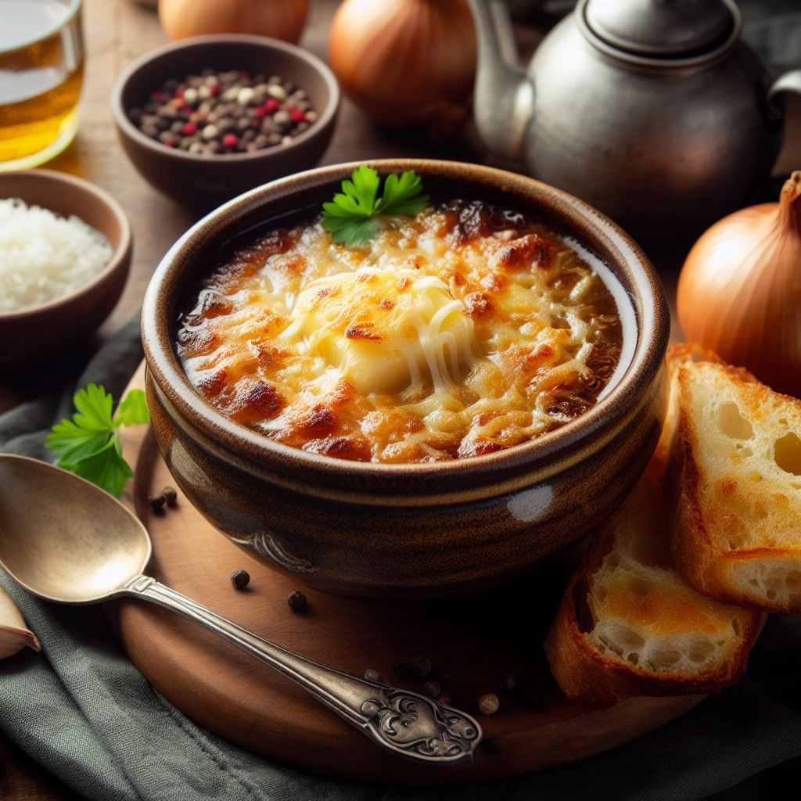

French Onion Soup: A Cozy Classic

Today, we're diving headfirst into the comforting embrace of a classic French bistro favorite: French Onion Soup. Imagine a steaming bowl filled with rich, caramelized onions, bathed in a hearty broth, and crowned with a crusty layer of Gruyère cheese. This dish is the epitome of culinary artistry, striking a perfect balance between simplicity and sophistication. So, grab your apron and let's embark on a journey to create this soul-warming masterpiece!
For the Souop
- 4 large yellow onions, thinly sliced
- 3 tablespoons unsalted butter
- 2 tablespoons olive oil
- 2 teaspoons granulated sugar
- 2 cloves garlic, minced
- 1/2 cup dry white wine (optional)
- 8 cups beef or vegetable broth
- 2 bay leaves
- Salt and freshly ground black pepper, to taste
For the Gratinee
- Baguette slices, toasted
- Gruyère cheese, grated
Instructions
- Caramelize the Onions:
- Start by melting butter and olive oil in a large, heavy-bottomed pot over medium heat. Add the thinly sliced onions and let them cook gently, stirring occasionally, until they turn a beautiful golden brown. This process takes patience, so don't rush it! Sprinkle sugar over the onions to help them caramelize evenly.
- Layer the Flavors:
- Once the onions are perfectly caramelized, add minced garlic and let it cook for an additional minute.
- If you're using white wine, pour it in and let it simmer for a few minutes, allowing the alcohol to evaporate and leaving behind its delightful essence.
- Develop the broth
- Pour in the beef or vegetable broth, and add the bay leaves for that distinctive aromatic touch.
- Let the soup simmer for about 30-40 minutes, allowing the flavors to meld together and create a harmonious symphony of taste.
- Add the Seasonings
- Season the soup with salt and freshly ground black pepper to your liking. Remember, a little at a time, taste, and adjust until it's just right.
- The broth should be rich and savory, with the sweetness of the onions shining through.
- The Gratinee:
- Preheat your oven's broiler.
- Ladel the soup into oven-safe bowls and float a few toasted baguette slices on top.
- Generously sprinkle a mound of grated Gruyère cheese over each bowl, ensuring it covers the surface evenly.
- Broil:
- Place the bowls on a baking sheet and slide them under the broiler until the cheese is bubbly, golden, and irresistibly gooey. Keep a close eye on them to prevent any burnt mishaps!
- Serve:
- Carefully remove the bowls from the oven (they'll be hot!), and let them cool for a minute or two. Dive in with a spoon, breaking through the cheesy crust to unearth the flavorful, onion-infused broth beneath.
Voilà! You've just created a bowl of French Onion Soup that would make any Parisian bistro chef proud. The harmony of sweet caramelized onions, savory broth, and gooey Gruyère is a testament to the culinary wonders achievable with simple ingredients and a touch of patience. So, serve it up, savor each spoonful, and let the warmth of this classic comfort dish envelop your soul. Bon appétit!